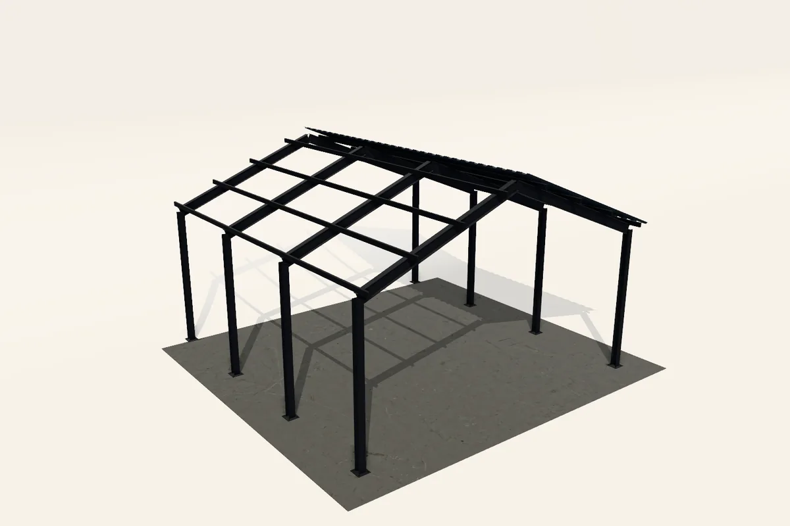
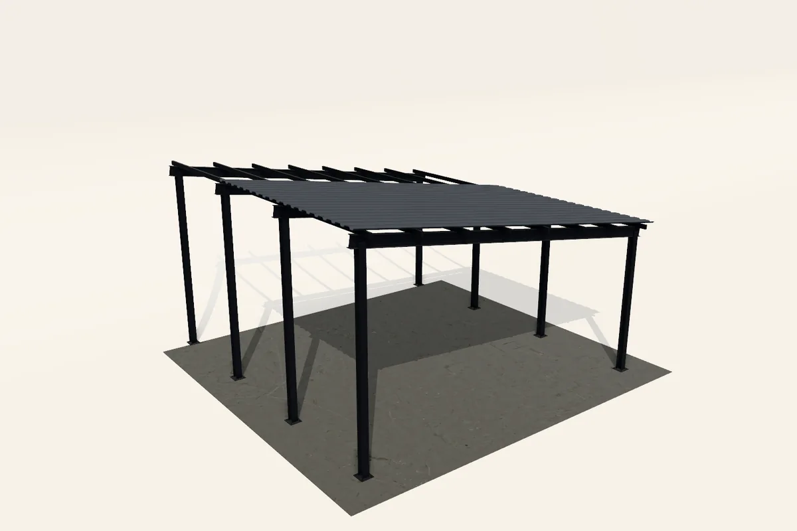

Hizmetler · 03
Mühen
dislik.
Statik hesabı yapıyor; çelik konstrüksiyon projelerini, 3D modelleri ve uygulama projelerini hazırlıyoruz. Projeyi çizen ekip, imalatı ve montajı da takip ediyor.

Mühendislik
Hesaptan
detaya.
Her iş, imalata geçmeden önce mühendislik masasından geçer. Hesabı yapan ekip, uygulamayı da takip eder.
- Statik analiz ve hesaplama
- Çelik konstrüksiyon projelendirme
- 3D modelleme ve detaylandırma
- İmalat ve montaj çizimleri
- Birleşim ve bağlantı detayları
- Mevcut yapılara özel çelik çözümler
Projeden
Önce
modelde.
Taşıyıcı sistemi önce 3D modelde kuruyor, imalattan önce her birleşimi ve ölçüyü bu modelde kontrol ediyoruz.



